---
{
"layout": "note",
"title": "Ch3_2. Classification_Logistic Regression",
"journal": true,
"section": "Study",
"topic": "Deep learning",
"excerpt": "지난 포스터에서는, class가 다른 점들을 분류하는 구분선을 어떻게 정의하는지 에 대해서 알아보았다. 그렇다면, 이런 질문이 들 수 있다. 위 두 직선 모두, 서로 다른 클라쓰의 두점을 구분하였다고 가정하자. 그랬을때, 두 구분선중",
"classes": "wide",
"permalink": "/blog/ai/deep-learning/ch3-2-classification-logistic-regression/",
"study_area": "AI",
"date": "2024-09-25",
"source_url": "https://jeffdissel.tistory.com/98",
"header": {
"teaser": "/blog/ai/deep-learning/ch3-2-classification-logistic-regression/images/img-001.png"
}
}
---
{% raw %}지난 포스터에서는,
class가 다른 점들을 분류하는
구분선을 어떻게 정의하는지
에 대해서 알아보았다.
그렇다면, 이런 질문이 들 수 있다.
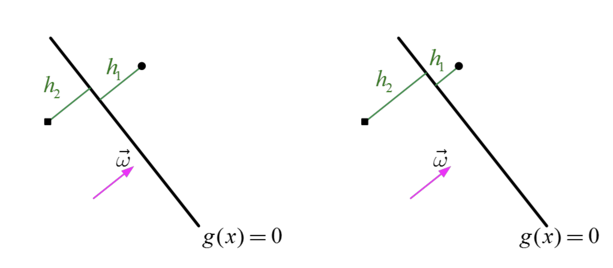
위 두 직선 모두, 서로 다른 클라쓰의 두점을
구분하였다고 가정하자.
그랬을때, 두 구분선중에서
무엇이 더 잘 구분한 구분선인가??
바로, 점들과 구분선 사이의 거리의 합이 최소일때, 즉
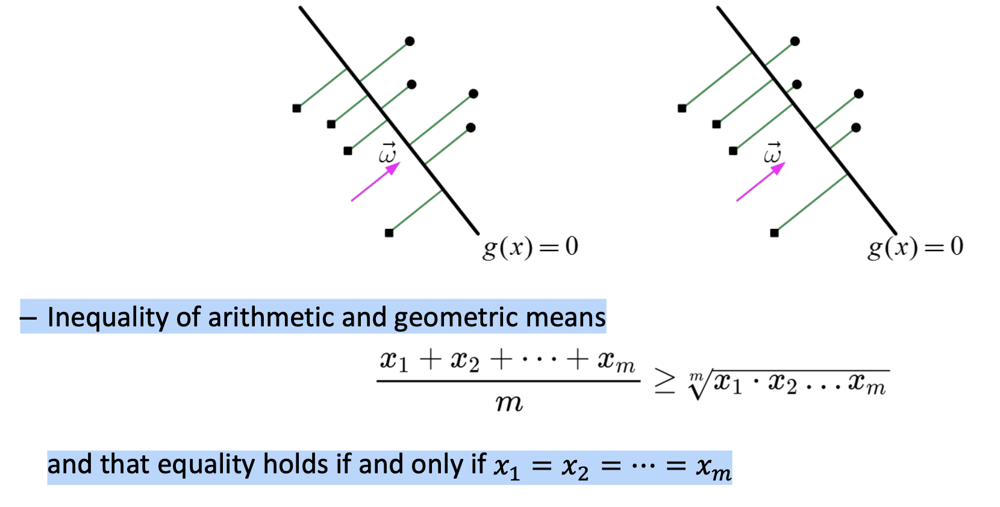
산술기하평균에서 배웠듯이,
거리의 곱들이 최소인 순간이다.
거리의 표현이
g(x) / ||w||
라는 것은 지난시간 증명 완료 하였고,
결국, w,x의 내적과 비례하다는 것을 도출 할 수 있다.
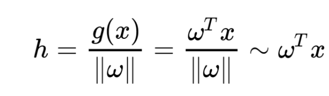
이후, 거리의 범위가 너무 넓기 때문에
강제로, 0과 1사이의 범위로 축소해준다.
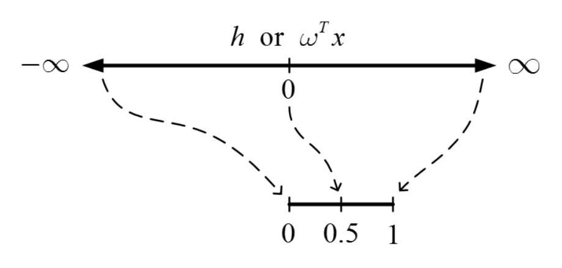
범위가 무한인 h를 0-1사이의 범위로
스케일 다운 시켜주는 함수를
logistic function
이라고 부르고 다양한 종류가 존재한다.
그 중에서, 대표적인 함수는 sigmoid function
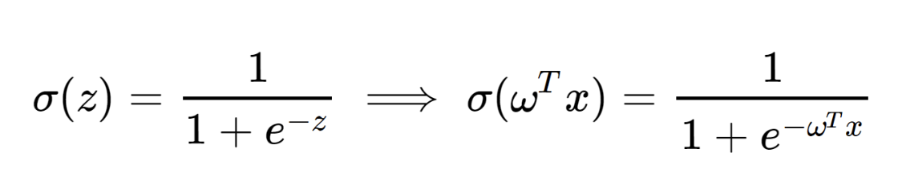
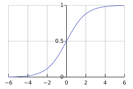
sigmoid function graph
그렇다면, 왜 0-1사이로 바꾸었는가?/
바로 확률의 관점으로 계산 할 수 있기 때문이다!.
도출 값이 1일 확률, 과 0 일 확률 두가지를
다음과 같이 시그모이드 함수로 나타낼 수 있다.
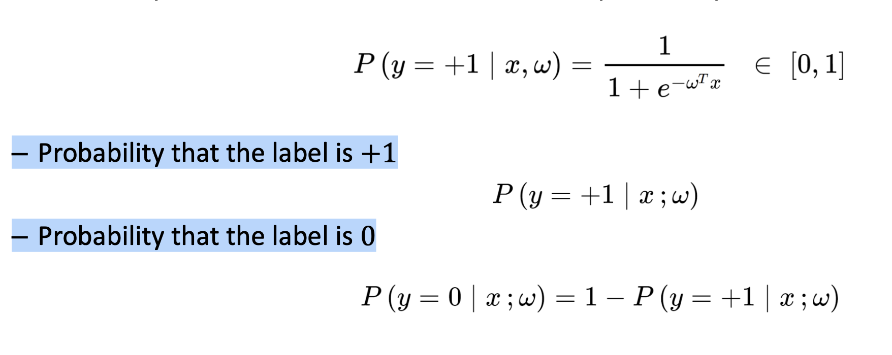
다시, logistic function hw(x) 형태로 나타내고,
그중에서 우리는 시그모이드 함수를 사용할 것이다.
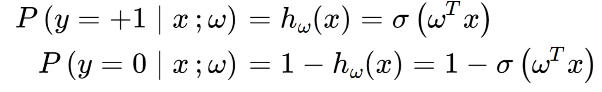
위의 식을 합쳐서 표현해보면.
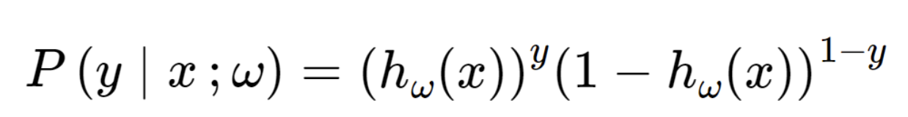
위 확률의 의미를 정확히 이해하고 넘어가자.
데이터상 x = 0 y = 1이라고 하자.
그렇다면, 지금 현재 w는
P(y=1 | x;w) = hw(x) 를 증가 시켜야 한다.
(y=1일 확률)
만약에, x=0, y=0 인 경우는
현재 w는
1-hw(x) 를 증가시켜야 한다.
(y=1일 확률을 낮춰야함)
따라서, 결론적으로
P(y | x;w)가 의미하는 것은, w(변수)가 올게 판단하는 정도를
나타낸다.
자 이제 w 기준으로, 각각 모든 데이터의 확률을 곱한 것이 바로.
L(w): Likelihodd function 이고
이는, 지금 w 기준으로,
모든 데이터들에 대하여 올바르게 판단한 정도를 나타낸다.
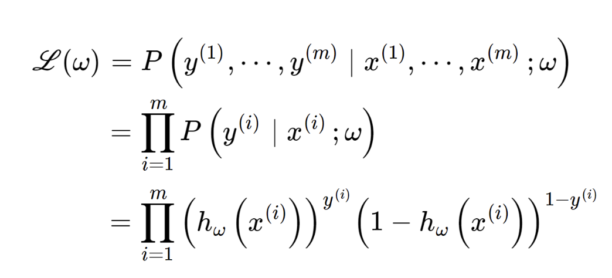
따라서, L(w) 를 최대화 시키는 w를 찾아야 한다.
지수형태이므로, log를 씌우면 더 간단하게 다음과같이 나타낼 수 있고,
log likelihood function
이라고 부른다.
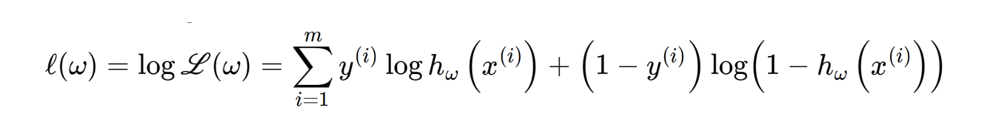
즉, l(w) 를 최대로 하는
-l(w)를 최소로하는
optimization 문제라는 것이다.
따라서, deep learning이 최적화 라는 것.{% endraw %}